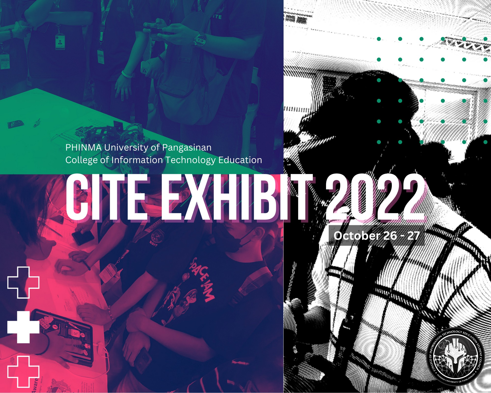

This year's App Exhibit was a huge success, as students outside from CITE Department also went and explored CITE Department's students' applications. Games, Social Media Applications, Virtual Reality, Cookbooks, Media Player and many more are seen in the exhibit.
